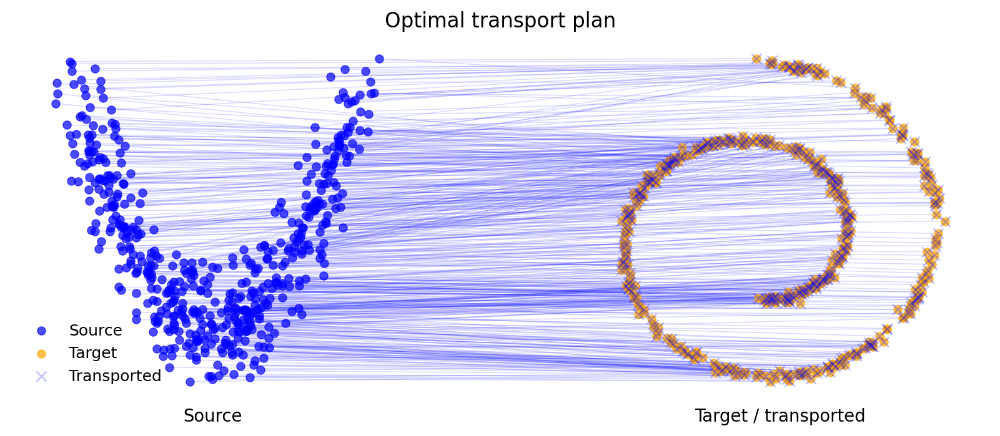
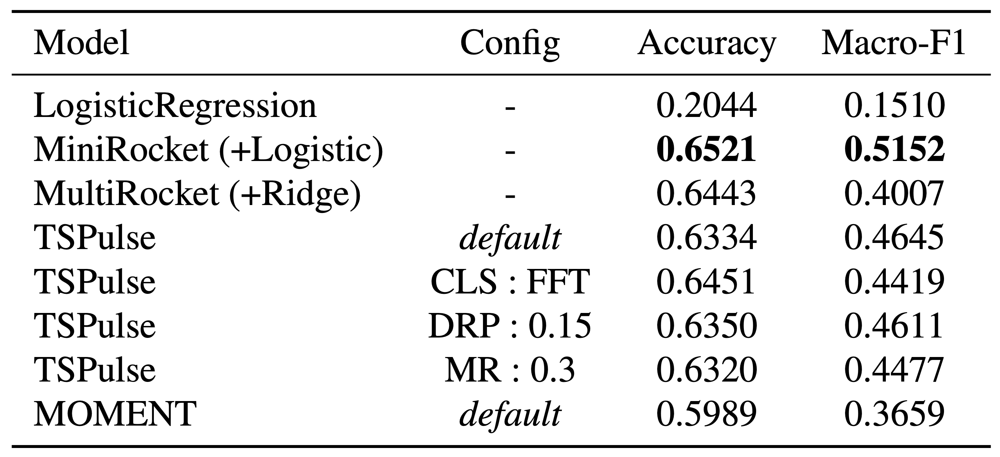
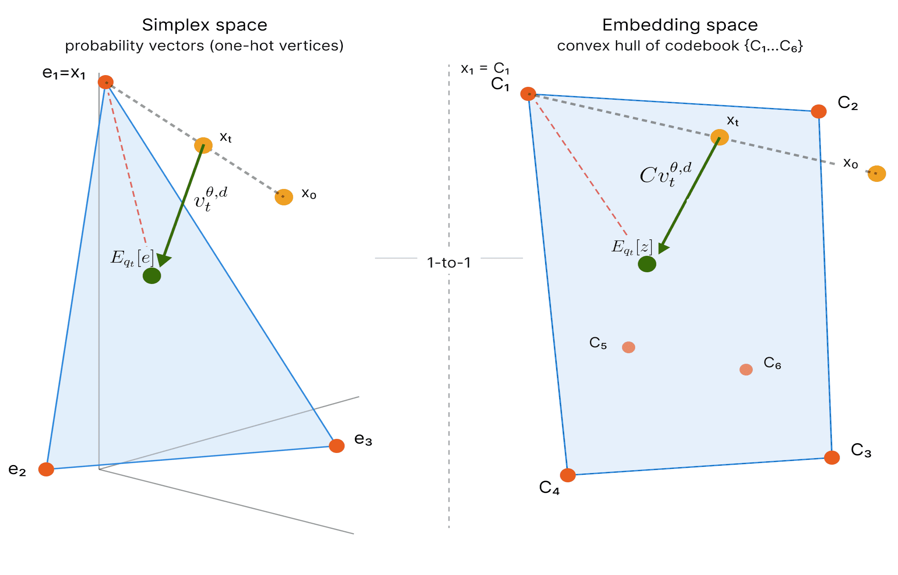
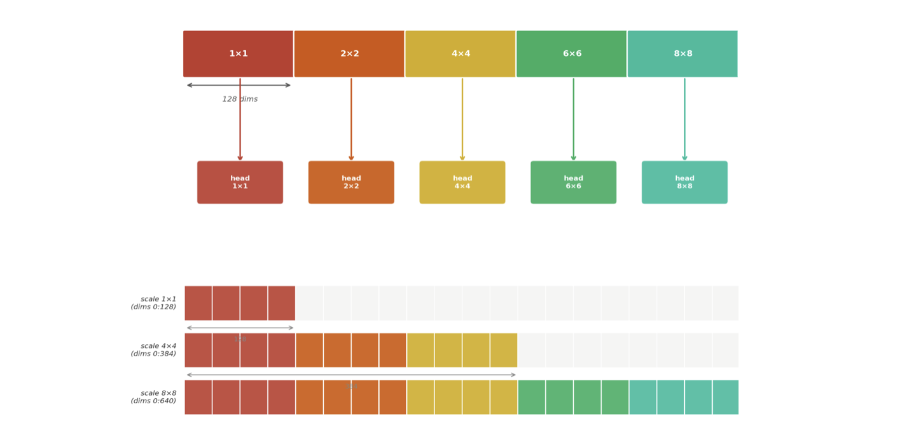
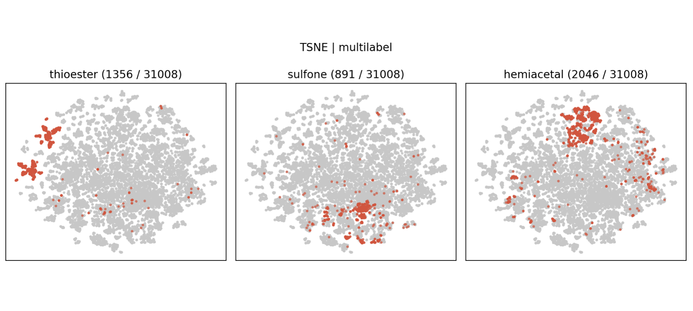
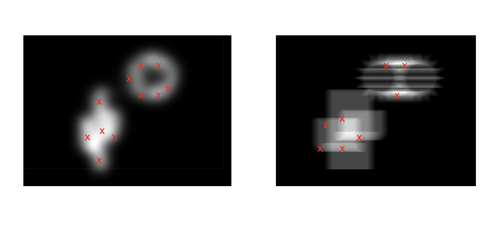
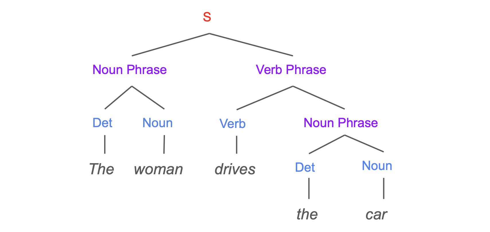

Benchmarking Entropic OT Solvers
2026Comparative study of five entropic optimal transport solvers, including Sinkhorn Map, ICNN, expectile-regularized NOT, Monge-gap NOT, and CFM, across four tasks.
AI researcher working on inverse problems, generative modeling, and reliable machine learning systems.
Use the search box to filter by project name, concept, method, library, or year.

Comparative study of five entropic optimal transport solvers, including Sinkhorn Map, ICNN, expectile-regularized NOT, Monge-gap NOT, and CFM, across four tasks.


Studied flow matching for categorical and quantized data, from curse of dimensionality issues to generalization properties, based on variational flow matching for graph generation.

Modified a VAR model for efficient generation using Matryushka representations and custom attention patterns, with a study of gradient conflict.


